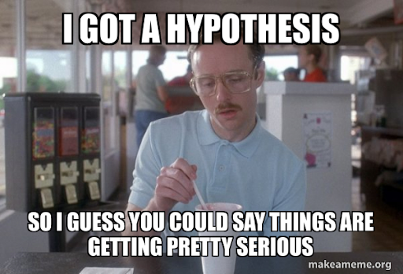
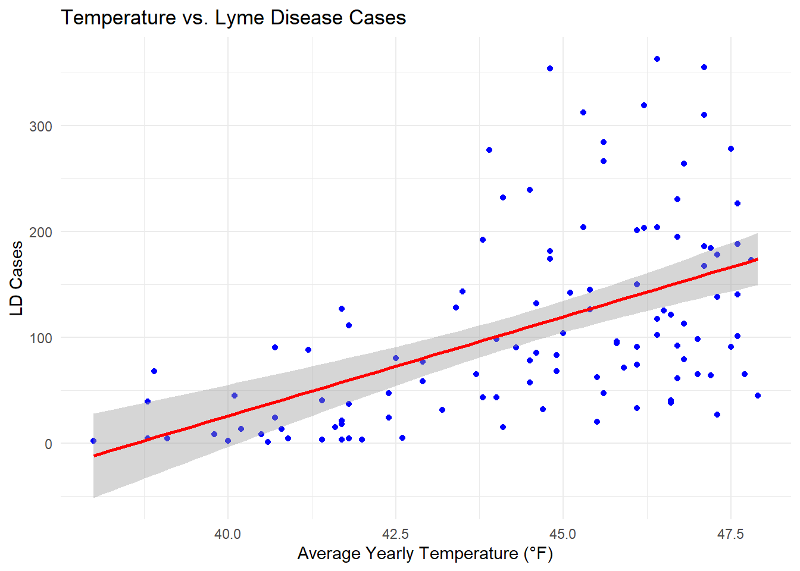
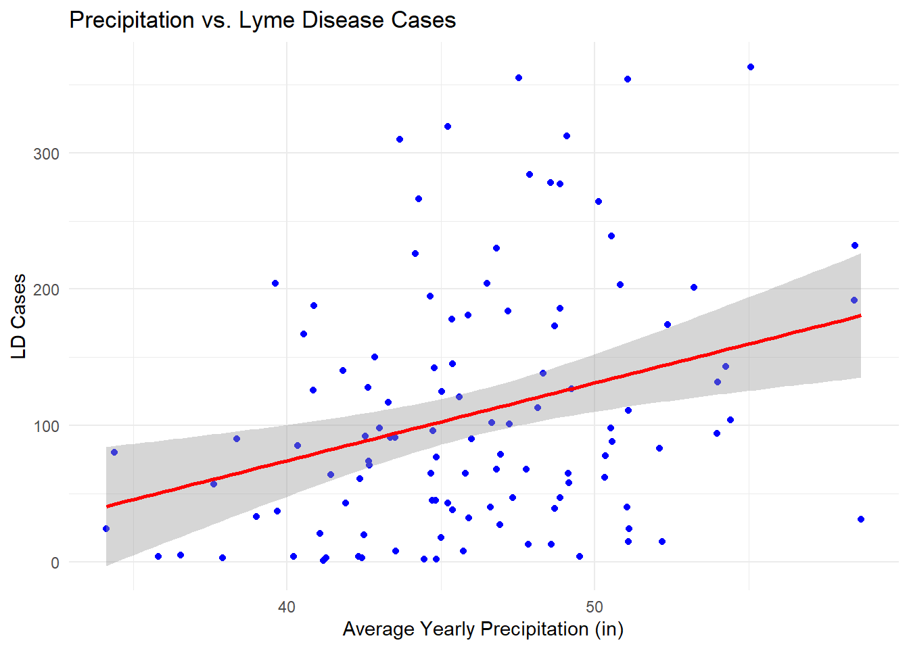
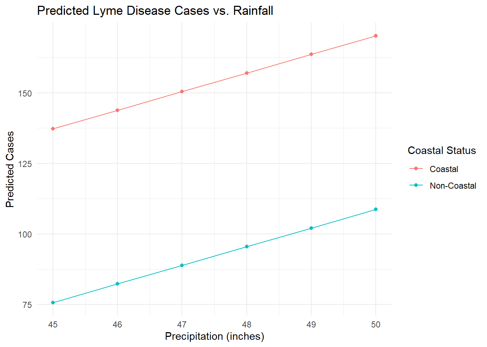
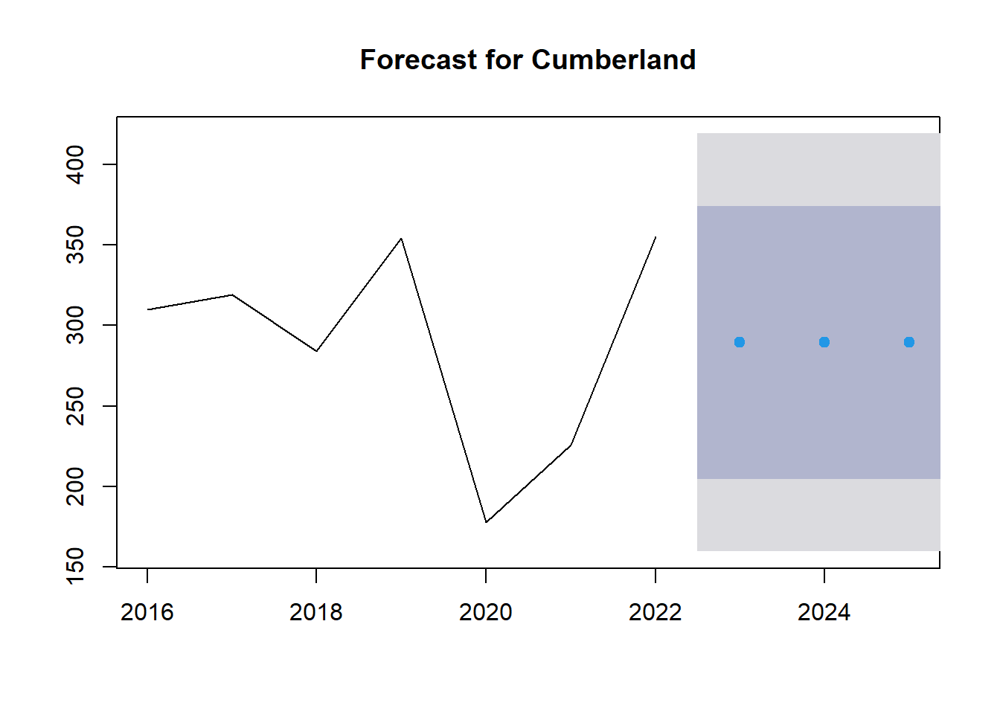

library(here)
library(tidyverse)
library(janitor)
library(dplyr)
library(forecast)
Maine’s Marvels: Discovering the Pine Tree State
Maine, often known as the Pine Tree State, is a treasure trove of natural beauty and is the place I spent many summers as a kid. From its rugged coastline dotted with iconic lighthouses to its vast forests and pristine lakes, Maine offers a breathtaking landscape for outdoor enthusiasts. The state is home to Acadia National Park, where visitors can hike granite peaks, explore rocky shores, and witness stunning sunrises from Cadillac Mountain. Maine is also famous for its delicious seafood, particularly its succulent lobster, which has become a symbol of the state’s culinary heritage. Quaint coastal towns, vibrant fall foliage, and a rich maritime history make Maine a captivating destination for travelers and nature lovers alike.
Maine, A Changing Climate
There is a big myth that cold winters kill ticks. While this is somewhat factual, it is not that simple. You can look at Maine’s winters as part of the regulation of ticks. If the they do not find away to escape freezing temperatures, like hiding in leaf litter, they can die. In fact, as much as 20% of ticks can die during cold season 2.
In a world where the effects of climate change are becoming increasingly evident, Maine has not been immune to its impacts. Over the past century, the state known for its beautiful autumn colors, rocky coast and snowy winters, has experienced a significant shift in its climate. Changes that include average yearly temperatures rising by 3.5 degrees (F) and annual precipitation increasing by 6 inches 3. These climatic changes have brought about a range of environmental consequences, one of which is the proliferation of ticks. As Maine’s climate becomes warmer and wetter, the conditions become more favorable for ticks to thrive, posing new challenges for both public health and the natural ecosystem.
While ticks may seem like tiny, insignificant creatures, their presence carries significant risks. Among the most concerning is Lyme disease (LD), a serious illness transmitted through the bite of infected ticks. Lyme disease can cause a range of symptoms, from fever and fatigue to severe neurological and cardiovascular issues if left untreated. This makes understanding and managing tick populations crucial for public health. Our comprehensive analysis delves into the environmental and biological factors contributing to the rise in tick numbers, aiming to uncover patterns and provide strategies to mitigate the risks associated with these persistent pests.
The Hypothesis
The two main hypothesis being tested in this blog are:
First:
H₀ (Null) -> Temp and precipitation have no affect on LD case
H₁ (Alternative) -> Temp and precipitation do affect LD case
Second:
H₀ (Null) -> Coastal counties have no affect on cases of Lyme disease
H₁ (Alternative) -> Coastal counties do have an affect on cases of Lyme disease

Ticks, A Very Brief History
Ticks have their own quirky version of the circle of life, which might as well be called the “Cycle of Bites.” Starting off as eggs laid by a tick mom who’s ready to see the world, these tiny terrors hatch into larvae with a taste for small creatures. After their first meal, they morph into nymphs, which are basically teenage ticks with an insatiable hunger for larger hosts—think bigger animals or unlucky humans. Once they’ve had their fill, they finally grow up to become adult ticks, ready to party (read: feed) on the blood of their next unsuspecting victim. Rinse and repeat! It’s like an endless buffet where the ticks are always the guests of honor, and we’re the main course. 🦟🍴
Myth: Ticks Jump from Trees 🌳 Reality Check: Contrary to the acrobatics you might imagine, ticks don’t jump, fly, or parachute down from trees like tiny ninjas. They generally hang out in grass and bushes, waiting to hitch a ride on unsuspecting passersby.
The Data and Access
For the analysis in this blog I used data from The National Oceanic and Atmospheric Administration (NOAA) 4 and The Centers for Disease Control (CDC) 5. You can also access my data through the data folder in my repository for this website or through direct links. Both will be at the end of this blog, under the heading “Where Can I Find The Data?”.
From NOAA this includes average yearly temperature and precipitation for each county from 2016-2022. From the CDC this was total number of Lyme disease (LD) cases for each county form the same time range. Each year was a separate .csv file that needed to be filtered and joined with the LD cases dataframe. Lets peak a some quick snapshots of what that looked like!
Import neccessary packages
Read in data
# Temp data sets
temp_16 <- read_csv(here::here("data", "maine_data", "temp2016.csv"))
temp_17 <- read_csv(here::here("data", "maine_data", "temp2017.csv"))
temp_18 <- read_csv(here::here("data", "maine_data", "temp2018.csv"))
temp_19 <- read_csv(here::here("data", "maine_data", "temp2019.csv"))
temp_20 <- read_csv(here::here("data", "maine_data", "temp2020.csv"))
temp_21 <- read_csv(here::here("data", "maine_data", "temp2021.csv"))
temp_22 <- read_csv(here::here("data", "maine_data", "temp2022.csv"))
# Precipitation data sets
precip_16 <- read_csv(here::here("data", "maine_data", "precip2016.csv"))
precip_17 <- read_csv(here::here("data", "maine_data", "precip2017.csv"))
precip_18 <- read_csv(here::here("data", "maine_data", "precip2018.csv"))
precip_19 <- read_csv(here::here("data", "maine_data", "precip2019.csv"))
precip_20 <- read_csv(here::here("data", "maine_data", "precip2020.csv"))
precip_21 <- read_csv(here::here("data", "maine_data", "precip2021.csv"))
precip_22 <- read_csv(here::here("data", "maine_data", "precip2022.csv"))
# Lyme disease data sets
LD_data <- read_csv(here::here("data", "maine_data", "LD_Case_Counts_by_County_2022.csv"))A Quick Note: This GIF accurately describes how my computer feels about importing Excel Spreadsheets with complex columns and rows:
As you can see the data and temp data is separated by year. The LD_data variable holds every single LD cases in the country over a 20 years span. We do not want that, so lets filter that down to just cases in Maine from 2016-2022 and check out the first few rows.
Myth: A Full Moon Makes Ticks More Active 🌕 Reality Check: While werewolves might howl at the moon, ticks don’t pay much attention to lunar phases. Their activity levels are more influenced by temperature and humidity.
Filter LD (Lyme Disease) data for Maine and columns needs
# Clean the names
LD_data <- clean_names(LD_data)
# Filter
LD_maine <- LD_data %>%
filter(stname == "Maine") %>%
select(ctyname, stname, ststatus, ctycode, cases2016, cases2017, cases2018, cases2019, cases2020, cases2021, cases2022)Check Out the first few rows
head(LD_maine)# A tibble: 6 × 11
ctyname stname ststatus ctycode cases2016 cases2017 cases2018 cases2019
<chr> <chr> <chr> <dbl> <dbl> <dbl> <dbl> <dbl>
1 Androscoggin … Maine High In… 1 92 96 68 98
2 Aroostook Cou… Maine High In… 3 1 8 4 2
3 Cumberland Co… Maine High In… 5 310 319 284 354
4 Franklin Coun… Maine High In… 7 3 24 13 39
5 Hancock County Maine High In… 9 150 204 174 192
6 Kennebec Coun… Maine High In… 11 204 266 181 277
# ℹ 3 more variables: cases2020 <dbl>, cases2021 <dbl>, cases2022 <dbl>Now we just have a table of LD cases in Maine and with the same time frame as our temp and precipitation data. Now, I did some more filtering, renaming of columns, adding a year column, and making coastal binary to eventually get to a point of preforming a left join with the CDC data. This will be collapsed in the code chunk below. Feel free to check it out.
👇👇
Code
#### Filter and clean temp and precip data for the columns that we want to keep, rename the value column to match the data. i.e °F for temp and inches for rain
temp_16_cl <- temp_16 %>% select(ID, Name, State, Value) %>% clean_names() %>% rename(degf = value)
temp_17_cl <- temp_17 %>% select(ID, Name, State, Value) %>% clean_names() %>% rename(degf = value)
temp_18_cl <- temp_18 %>% select(ID, Name, State, Value) %>% clean_names() %>% rename(degf = value)
temp_19_cl <- temp_19 %>% select(ID, Name, State, Value) %>% clean_names() %>% rename(degf = value)
temp_20_cl <- temp_20 %>% select(ID, Name, State, Value) %>% clean_names() %>% rename(degf = value)
temp_21_cl <- temp_21 %>% select(ID, Name, State, Value) %>% clean_names() %>% rename(degf = value)
temp_22_cl <- temp_22 %>% select(ID, Name, State, Value) %>% clean_names() %>% rename(degf = value)
precip_16_cl <- precip_16 %>% select(ID, Name, State, Value) %>% clean_names() %>% rename(inches = value)
precip_17_cl <- precip_17 %>% select(ID, Name, State, Value) %>% clean_names() %>% rename(inches = value)
precip_18_cl <- precip_18 %>% select(ID, Name, State, Value) %>% clean_names() %>% rename(inches = value)
precip_19_cl <- precip_19 %>% select(ID, Name, State, Value) %>% clean_names() %>% rename(inches = value)
precip_20_cl <- precip_20 %>% select(ID, Name, State, Value) %>% clean_names() %>% rename(inches = value)
precip_21_cl <- precip_21 %>% select(ID, Name, State, Value) %>% clean_names() %>% rename(inches = value)
precip_22_cl <- precip_22 %>% select(ID, Name, State, Value) %>% clean_names() %>% rename(inches = value)
#Add years to temp and precip data
temp_16_cl <- temp_16_cl %>% mutate(year = 2016)
temp_17_cl <- temp_17_cl %>% mutate(year = 2017)
temp_18_cl <- temp_18_cl %>% mutate(year = 2018)
temp_19_cl <- temp_19_cl %>% mutate(year = 2019)
temp_20_cl <- temp_20_cl %>% mutate(year = 2020)
temp_21_cl <- temp_21_cl %>% mutate(year = 2021)
temp_22_cl <- temp_22_cl %>% mutate(year = 2022)
precip_16_cl <- precip_16_cl %>% mutate(year = 2016)
precip_17_cl <- precip_17_cl %>% mutate(year = 2017)
precip_18_cl <- precip_18_cl %>% mutate(year = 2018)
precip_19_cl <- precip_19_cl %>% mutate(year = 2019)
precip_20_cl <- precip_20_cl %>% mutate(year = 2020)
precip_21_cl <- precip_21_cl %>% mutate(year = 2021)
precip_22_cl <- precip_22_cl %>% mutate(year = 2022)
#Bring in LD cases into each data frame
# First change the name of ctyname to Name
LD_maine <- LD_maine %>% rename(name = ctyname)
# Pull in cases column for each dataframe with left join
temp_16_cl <- temp_16_cl %>% left_join(LD_maine %>% select(name, cases2016), by = "name")
temp_17_cl <- temp_17_cl %>% left_join(LD_maine %>% select(name, cases2017), by = "name")
temp_18_cl <- temp_18_cl %>% left_join(LD_maine %>% select(name, cases2018), by = "name")
temp_19_cl <- temp_19_cl %>% left_join(LD_maine %>% select(name, cases2019), by = "name")
temp_20_cl <- temp_20_cl %>% left_join(LD_maine %>% select(name, cases2020), by = "name")
temp_21_cl <- temp_21_cl %>% left_join(LD_maine %>% select(name, cases2021), by = "name")
temp_22_cl <- temp_22_cl %>% left_join(LD_maine %>% select(name, cases2022), by = "name")
# Same for precip
precip_16_cl <- precip_16_cl %>% left_join(LD_maine %>% select(name, cases2016), by = "name")
precip_17_cl <- precip_17_cl %>% left_join(LD_maine %>% select(name, cases2017), by = "name")
precip_18_cl <- precip_18_cl %>% left_join(LD_maine %>% select(name, cases2018), by = "name")
precip_19_cl <- precip_19_cl %>% left_join(LD_maine %>% select(name, cases2019), by = "name")
precip_20_cl <- precip_20_cl %>% left_join(LD_maine %>% select(name, cases2020), by = "name")
precip_21_cl <- precip_21_cl %>% left_join(LD_maine %>% select(name, cases2021), by = "name")
precip_22_cl <- precip_22_cl %>% left_join(LD_maine %>% select(name, cases2022), by = "name")
#### Renmame each column to just cases
temp_16_cl <- temp_16_cl %>% rename(cases = cases2016)
temp_17_cl <- temp_17_cl %>% rename(cases = cases2017)
temp_18_cl <- temp_18_cl %>% rename(cases = cases2018)
temp_19_cl <- temp_19_cl %>% rename(cases = cases2019)
temp_20_cl <- temp_20_cl %>% rename(cases = cases2020)
temp_21_cl <- temp_21_cl %>% rename(cases = cases2021)
temp_22_cl <- temp_22_cl %>% rename(cases = cases2022)
precip_16_cl <- precip_16_cl %>% rename(cases = cases2016)
precip_17_cl <- precip_17_cl %>% rename(cases = cases2017)
precip_18_cl <- precip_18_cl %>% rename(cases = cases2018)
precip_19_cl <- precip_19_cl %>% rename(cases = cases2019)
precip_20_cl <- precip_20_cl %>% rename(cases = cases2020)
precip_21_cl <- precip_21_cl %>% rename(cases = cases2021)
precip_22_cl <- precip_22_cl %>% rename(cases = cases2022)
#### Bring in precip to temp data frames with left join
temp_16_precip <- temp_16_cl %>% left_join(precip_16_cl %>% select(id, inches), by = "id")
temp_17_precip <- temp_17_cl %>% left_join(precip_17_cl %>% select(id, inches), by = "id")
temp_18_precip <- temp_18_cl %>% left_join(precip_18_cl %>% select(id, inches), by = "id")
temp_19_precip <- temp_19_cl %>% left_join(precip_19_cl %>% select(id, inches), by = "id")
temp_20_precip <- temp_20_cl %>% left_join(precip_20_cl %>% select(id, inches), by = "id")
temp_21_precip <- temp_21_cl %>% left_join(precip_21_cl %>% select(id, inches), by = "id")
temp_22_precip <- temp_22_cl %>% left_join(precip_22_cl %>% select(id, inches), by = "id")
# Finally, merge the dataframes into one
LD_maine_weather <- bind_rows(temp_16_precip,
temp_17_precip,
temp_18_precip,
temp_19_precip,
temp_20_precip,
temp_21_precip,
temp_22_precip)
# Add Boolean value for coastal counties. 1 is yes 0 is no
# Vector of coastal counties
coastal_counties <- c("York County", "Cumberland County", "Sagadahoc County", "Lincoln County", "Knox County", "Waldo County", "Hancock County", "Washington County", "Kennebec County")
LD_maine_weather <- LD_maine_weather %>% mutate(coastal = ifelse(name %in% coastal_counties, 1, 0))Exploratory Linear Regressions
Model for Temperature and LD Cases
# Linear regression for temperature and cases of LD
model_temp <- lm(cases ~ degf, data = LD_maine_weather)
print(summary(model_temp))
Call:
lm(formula = cases ~ degf, data = LD_maine_weather)
Residuals:
Min 1Q Median 3Q Max
-135.54 -53.24 -22.20 40.83 238.35
Coefficients:
Estimate Std. Error t value Pr(>|t|)
(Intercept) -724.621 129.004 -5.617 1.48e-07 ***
degf 18.756 2.898 6.472 2.78e-09 ***
---
Signif. codes: 0 '***' 0.001 '**' 0.01 '*' 0.05 '.' 0.1 ' ' 1
Residual standard error: 78.19 on 110 degrees of freedom
Multiple R-squared: 0.2757, Adjusted R-squared: 0.2692
F-statistic: 41.88 on 1 and 110 DF, p-value: 2.781e-09Code
# Plot
temp_ld_plot <- ggplot(LD_maine_weather, aes(x = degf, y = cases)) +
geom_point(color = "blue") +
geom_smooth(method = "lm", color = "red", se = TRUE) +
labs(title = "Temperature vs. Lyme Disease Cases",
x = "Average Yearly Temperature (°F)",
y = "LD Cases") +
theme_minimal()
print(temp_ld_plot)`geom_smooth()` using formula = 'y ~ x'
🚨 Degf (degree Fahrenheit): For each 1°F increase, the LD cases are expected to increase by approximately 19 cases. P-value (2.78e-09) indicates this relationship is statistically significant.🚨
Model for Rain and LD Cases
# Linear regression for rain and cases of LD
model_rain <- lm(cases ~ inches, data = LD_maine_weather)
print(summary(model_rain))
Call:
lm(formula = cases ~ inches, data = LD_maine_weather)
Residuals:
Min 1Q Median 3Q Max
-149.64 -62.74 -18.33 49.70 237.79
Coefficients:
Estimate Std. Error t value Pr(>|t|)
(Intercept) -153.907 79.070 -1.946 0.05415 .
inches 5.704 1.707 3.342 0.00114 **
---
Signif. codes: 0 '***' 0.001 '**' 0.01 '*' 0.05 '.' 0.1 ' ' 1
Residual standard error: 87.55 on 110 degrees of freedom
Multiple R-squared: 0.09216, Adjusted R-squared: 0.08391
F-statistic: 11.17 on 1 and 110 DF, p-value: 0.001139Code
# Plot
rain_ld_plot <- ggplot(LD_maine_weather, aes(x = inches, y = cases)) +
geom_point(color = "blue") +
geom_smooth(method = "lm", color = "red", se = TRUE) +
labs(title = "Precipitation vs. Lyme Disease Cases",
x = "Average Yearly Precipitation (in)",
y = "LD Cases") +
theme_minimal()
print(rain_ld_plot)`geom_smooth()` using formula = 'y ~ x'
🚨 Inches (6.008): For each additional inch, the number of LD cases is expected to increase by approximately 6. This relationship is also statistically significant given the very low p-value (0.00114).🚨
Tick Dating 🌹: Ticks have a rather unusual “dating” life. Female ticks can lay thousands of eggs after a good meal. So, when a female tick says she’s going out for dinner, she’s really planning a family reunion… with thousands of new ticks.
First Hypothysis, Reject the Null
It should not be that surprising that temperature and precipitation are indeed significant predictors in the number of LD cases. Still it is important to check your assumptions. Without checking this information, our model could be seriously flawed.
Now let’s add coastal to the model.
Linear Regression: Cases, Temperature and Precipitation and Coastal (Boolean)
lm_model <- lm(cases ~ degf + inches + coastal, data = LD_maine_weather)
print(summary(lm_model))
Call:
lm(formula = cases ~ degf + inches + coastal, data = LD_maine_weather)
Residuals:
Min 1Q Median 3Q Max
-139.862 -35.764 -8.491 34.576 200.477
Coefficients:
Estimate Std. Error t value Pr(>|t|)
(Intercept) -653.427 209.430 -3.120 0.00232 **
degf 12.266 4.178 2.936 0.00407 **
inches 4.175 1.569 2.661 0.00898 **
coastal 44.196 22.541 1.961 0.05249 .
---
Signif. codes: 0 '***' 0.001 '**' 0.01 '*' 0.05 '.' 0.1 ' ' 1
Residual standard error: 72.85 on 108 degrees of freedom
Multiple R-squared: 0.3827, Adjusted R-squared: 0.3656
F-statistic: 22.32 on 3 and 108 DF, p-value: 2.539e-11Second Hypothysis, Fail to Reject the Null
The model above revealed several key insights into the factors influencing Lyme disease cases in Maine. P-values for the temperature (degf) and rainfall (inches) are significant predictors of Lyme disease cases, with both variables showing a positive relationship with the number of cases. This means that as temperatures and precipitation increase, so do the instances of Lyme disease. Additionally, coastal was not significant in predicting Lyme disease cases. This means we fail to reject the null hypothesis. Overall, the model explains approximately 36% of the variance in Lyme disease cases, indicating that while these factors are important, other variables may also play a role in driving the trends we observe.
Omitted Variable Bias?
Since our model had such a low R Squared, it points to the potential of something missing. What about population? Surely the more people would mean more cases? Let’s add pop data for each year and county in the dataframe. Then check the head to verify.
Myth: Ticks Prefer Hairy People 🧔 Reality Check: Ticks aren’t particularly interested in your grooming habits. They’re drawn to warmth, body odor, and the carbon dioxide you exhale—not your luscious locks.
Accounting for Population
Code
# Create a data frame with population data for Maine counties from 2020 to 2022
population_data <- data.frame(
year = rep(2020:2022, each = 16),
name = rep(c("Androscoggin County", "Aroostook County", "Cumberland County", "Franklin County", "Hancock County", "Kennebec County", "Knox County", "Lincoln County", "Oxford County", "Penobscot County", "Piscataquis County", "Sagadahoc County", "Somerset County", "Waldo County", "Washington County", "York County"), times = 3),
population = c(
113765, 67351, 310230, 30828, 56526, 127259, 40977, 36507, 59905, 155312, 17486, 37513, 51302, 40620, 31555, 218586,
114300, 67400, 310500, 31000, 56600, 127700, 41000, 36700, 60000, 156000, 17500, 37600, 51500, 40700, 31600, 219000,
114800, 67450, 311000, 31200, 56700, 128000, 41100, 36900, 60100, 157000, 17550, 37700, 51600, 40800, 31700, 220000
)
)
# Filter LD data for just the years we have in population. This is a smaller sample but should give us some indication of correlation
LD_data_pop <- LD_maine_weather %>%
filter(year %in% c(2020, 2021, 2022))
# Merge pop data to filtered years
LD_pop_maine <- LD_data_pop %>%
left_join(population_data, by = c("name", "year"))
print(head(LD_pop_maine))# A tibble: 6 × 9
id name state degf year cases inches coastal population
<chr> <chr> <chr> <dbl> <dbl> <dbl> <dbl> <dbl> <dbl>
1 ME-001 Androscoggin County Maine 46.6 2020 40 46.6 0 113765
2 ME-003 Aroostook County Maine 40.9 2020 4 35.8 0 67351
3 ME-005 Cumberland County Maine 47.3 2020 178 45.4 1 310230
4 ME-007 Franklin County Maine 41.7 2020 18 45.0 0 30828
5 ME-009 Hancock County Maine 46.4 2020 117 43.3 1 56526
6 ME-011 Kennebec County Maine 46.5 2020 125 45.0 1 127259Create New Model to Include Population
# Create model
lm_pop <- lm(cases ~ degf + inches + coastal + population, data = LD_pop_maine)
print(summary(lm_pop))
Call:
lm(formula = cases ~ degf + inches + coastal + population, data = LD_pop_maine)
Residuals:
Min 1Q Median 3Q Max
-92.159 -40.379 -7.305 40.052 178.126
Coefficients:
Estimate Std. Error t value Pr(>|t|)
(Intercept) -2.102e+02 3.022e+02 -0.696 0.49030
degf -1.328e+00 6.870e+00 -0.193 0.84764
inches 6.597e+00 1.897e+00 3.477 0.00117 **
coastal 6.153e+01 3.048e+01 2.019 0.04976 *
population 5.640e-04 1.212e-04 4.654 3.12e-05 ***
---
Signif. codes: 0 '***' 0.001 '**' 0.01 '*' 0.05 '.' 0.1 ' ' 1
Residual standard error: 59.69 on 43 degrees of freedom
Multiple R-squared: 0.6072, Adjusted R-squared: 0.5707
F-statistic: 16.62 on 4 and 43 DF, p-value: 2.639e-08Breakdown of Changes:
Intercept:
Before: -673.986 (p = 0.00140)
After: -210.200 (p = 0.49030)
Change: The intercept changed significantly, indicating that the baseline count of cases (when all predictors are zero) has been adjusted to account for the influence of the population variable. The significance also dropped, becoming non-significant after adding population.
degf (degrees Fahrenheit):
Before: 12.227 (p = 0.00354)
After: -1.328 (p = 0.84764)
Change: The coefficient for degf changed from positive to negative and became non-significant. This suggests that once population is accounted for, the impact of temperature on Lyme Disease cases is not as substantial. Note: I Will cover why temp coefficient being negative in this context seems odd in the limitations section.
inches (rainfall):
Before: 4.606 (p = 0.00344)
After: 6.597 (p = 0.00117)
Change: The coefficient for inches increased, indicating a stronger positive relationship between rainfall and Lyme Disease cases. It remained significant, suggesting that rainfall is an important predictor even when population is included.
coastal (coastal status):
Before: 40.153 (p = 0.07230)
After: 61.530 (p = 0.04976)
Change: The coefficient for coastal increased and became significant at the 0.05 level. This indicates that coastal counties have a higher number of cases, and this relationship is more pronounced after accounting for population.
population:
0.000564 (p = 3.12e-05)
Change: The new population variable shows a positive and highly significant relationship with Lyme Disease cases. As the population increases, the number of cases increases, highlighting the importance of population density in understanding Lyme Disease spread.
Summary: Adding the population variable: - Adjusts the intercept and the effects of other predictors. - Decreases the significance of temperature (degf) as a predictor. - Increases the importance and significance of rainfall (inches) and coastal status (coastal). - Adjusted R^2 almost doubled. Now 57% of the variance in the response variable (cases) is explained by the predictors in the model
What About Climate Change?
Maine’s average precipitation for all seven years in the model is 44.9 inches. What if it were to increase precipitation and have all other predictors stay at their mean value? How would that affect LD cases in coastal vs. non-coastal counties?
Code
# Define the range of rainfall (in inches)
rainfall_range <- seq(45, 50, by = 1)
# Calculate the mean temperature
mean_temp <- mean(LD_pop_maine$degf)
# Create a function to generate predictions
generate_predictions <- function(coastal_status) {
data.frame(
inches = rainfall_range,
cases = sapply(rainfall_range, function(rain) {
new_data <- data.frame(
degf = mean_temp,
inches = rain,
coastal = coastal_status,
population = mean(LD_pop_maine$population)
)
predict(lm_pop, newdata = new_data)
}),
coastal = ifelse(coastal_status == 1, "Coastal", "Non-Coastal")
)
}
# Generate predictions for coastal status 0 and 1
predictions_coastal <- generate_predictions(1)
predictions_non_coastal <- generate_predictions(0)
# Combine both sets of predictions
predictions <- rbind(predictions_coastal, predictions_non_coastal)
# Create the plot
parallel_plot <- ggplot(predictions, aes(x = inches, y = cases, color = coastal, group = coastal)) +
geom_line() +
geom_point() +
labs(title = "Predicted Lyme Disease Cases vs. Rainfall",
x = "Precipitation (inches)",
y = "Predicted Cases",
color = "Coastal Status") +
theme_minimal()
print(parallel_plot)
Forecasting Cases for Cumberland County
Based on the model, what if we wanted to forecast the future cases of Lyme disease for Cumberland county?
# Function to create time series, fit ARIMA, and forecast for each county
forecast_by_county <- function(data, county_name) {
county_data <- data %>% filter(name == county_name) %>% arrange(year)
county_ts <- ts(county_data$cases, start = min(county_data$year), frequency = 1)
arima_model <- auto.arima(county_ts)
forecasted_values <- forecast(arima_model, h = 3)
list(
model = arima_model,
forecast = forecasted_values
)
}
# Filter data for Cumberland
cumberland_forecast <- forecast_by_county(LD_maine_weather, "Cumberland County")
# Print forecast for Cumberland
print("County: Cumberland") [1] "County: Cumberland"print(cumberland_forecast$forecast) Point Forecast Lo 80 Hi 80 Lo 95 Hi 95
2023 289.4286 204.685 374.1722 159.8244 419.0327
2024 289.4286 204.685 374.1722 159.8244 419.0327
2025 289.4286 204.685 374.1722 159.8244 419.0327# Plot forecast for Cumberland
plot(cumberland_forecast$forecast, main = "Forecast for Cumberland")
The forecast section starts from 2023 onward, shaded in blue and gray, with three blue dots indicating forecast values for 2023, 2024, and 2025. The shaded blue area around the forecast values represents 80% confidence interval. Meaning that we are 80% confident that cases will fall in this range. The entire area including the gray, represents 95% confidence interval. Giving an idea of the potential range of future values.
Lastly, Limitations
As comprehensive as our analysis is, it’s important to acknowledge its limitations:
- The data for temperature, precipitation, and Lyme disease cases were grouped by year, which does not capture the nuances of seasonality.
- Humidity, a significant factor in tick populations, was not included, leading to potential omitted variable bias.
- The coefficient for degf was negative. This is a red flag from what we know about ticks. It means there could be more predictors unaccounted for.
- Additionally, the seven-year span of our data set is relatively short for making long-term forecasts. Despite these constraints, our findings provide valuable insights into the environmental factors influencing tick dynamics in Maine. Moving forward, incorporating more granular data and additional variables will enhance our understanding and predictive accuracy. But for now, don’t forget your tick check!
Where Can I Find The Data?
Check out my repository here
Or if you want to download them directly from the websites, CDC Lyme disease data can be found here. Precipitation and temperature data can be downloaded here
Footnotes
https://thedownlo.com/north-america-travel/usa-travel/maine/the-ultimate-maine-bucketlist-58-things-to-do-in-maine/↩︎
https://www.whatsthatbug.com/do-ticks-survive-in-winter/↩︎
https://www.kitteryme.gov/climate-action-planning-kittery/pages/climate-change-maine↩︎
https://www.noaa.gov/↩︎
https://www.cdc.gov/↩︎